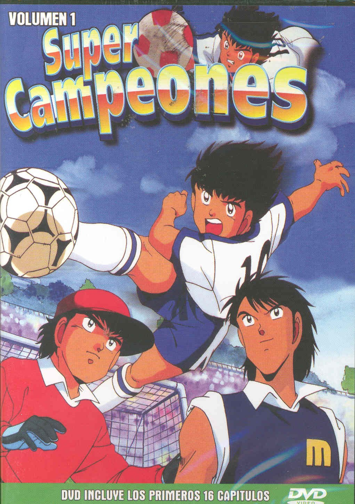

Animes favoritos
| Naruto |
| Naruto(ナルト?), romanizada como NARUTO, es una serie de manga escrita e ilustrada por Masashi
Kishimoto. La obra narra la historia de un ninja huérfano adolescente, cuyos padres murieron en
Ataque del Zorro Demonio de Nueve Colas, llamado Naruto Uzumaki, quien aspira a convertirse en
Hokage, líder de su aldea, con el propósito de ser reconocido como alguien importante dentro de la
aldea y entre sus compañeros. |

|
| Los super campeones |
| Supercampeones es una serie de manga creada por Yōichi Takahashi en 1981, con una adaptación al
anime realizada entre 1983 y 1986.
El anime se emitió desde el 13 de octubre de 1983 hasta el 27 de marzo de 1986 para la pequeña
pantalla a través del canal 12 de TV Tokyo. Está compuesto de 128 episodios de 21 minutos cada
uno, donde se cuenta la historia de los mangas hasta el número 25, además de añadir contenidos
que no estaban en la historia original, como el torneo mundial infantil en Europa; con esto, el
anime sobrepasó al manga.. |

|
| Los caballeros del Zodiaco |
| Saint Seiya (聖闘士星矢 lit. Seiya El Santo?), conocida como Los Caballeros del Zodiaco, es una serie
demanga escrita e ilustrada por Masami Kurumada. Fue publicada desde el 3 de diciembre de 1985
en la revista Shūkan Shōnen Jump de la editorial Shūeisha hasta el 12 de diciembre de 1990 en la
revista V Jump.[9] Fue adaptado posteriormente en una serie de animación (anime) de 114
episodios, una OVA de 31 episodios y una ONA de 13 episodios, en total 158. También se han
producido cinco películas animadas y una película de animación CG, además de varias precuelas y
secuelas oficiales de la historia original. |

|
hoja de vida